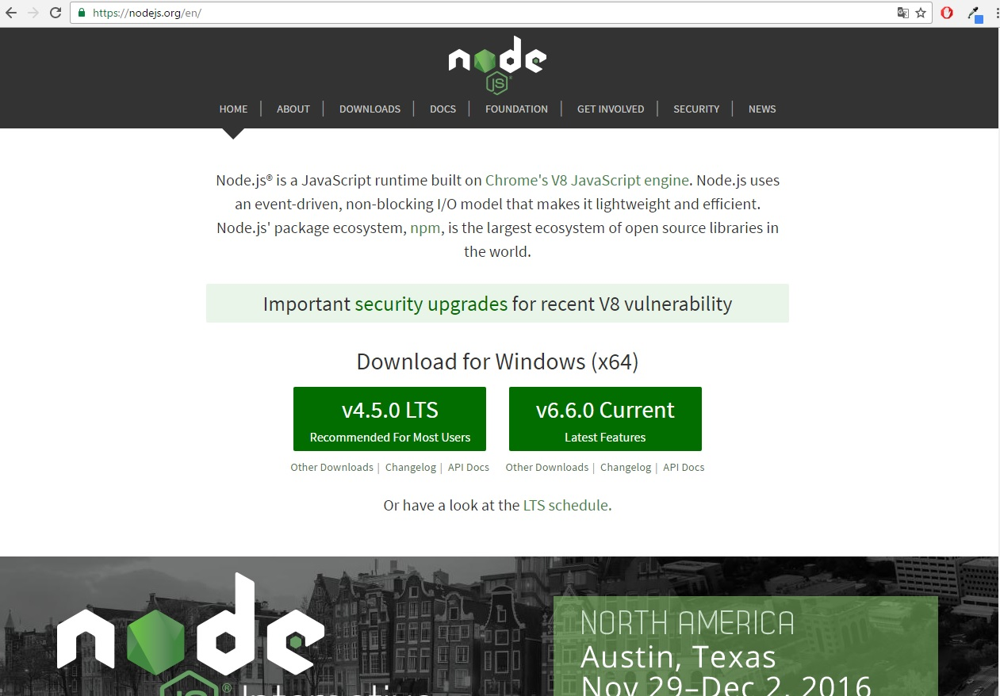
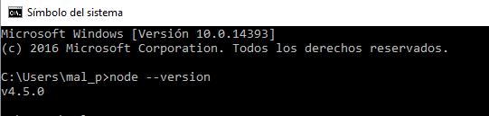

Tareas Iniciales Sistemas y Tecnologías Web
Este tutorial explicará los pasos para instalar las diferentes herramientas que se utilizarán a lo largo de la asignatura SYTW . Además, se mostrarán capturas del correcto funcionamiento de las mismas.
NODE JS
Node JS es un intérprete Javascript del lado servidor que cambia la noción de cómo debería trabajar un servidor. La meta principal es permitir al programador la posibilidad de realizar aplicaciones altamente escalables y permitir manejar miles de conexiones simultáneas en una única máquina física. A continuación, se procederá a detallar la instalación de Node JS en los diferentes sistemas operativos.
Instalación de Node Js en Windows
Para la instalación de Node JS en una máquina con Sistema Operativo Windows, lo primero que se debe realizar es visitar su página web oficial. Una vez realizado este paso, se puede descargar la versión lts con soporte de actualizaciones, o la última versión existente.

Cuando se haya descargado el instalador de Node JS, se siguen los pasos que indica el instalador y se procederá a abrir una terminal para comprobar que se ha instalado correctamente. Para la comprobación de que se ha instalado sin ningún tipo de problemas, se realizará lo siguiente en la consola cmd:
node --version
Este comando mostrará la versión instalada en el ordenador. 
Como se puede comprobar en la captura de pantalla, se ha instalado la version lts con soporte de actualizaciones.
Instalación de Node Js en Linux
Para la instalación de Node JS en el sistema operativo Linux, se puede realizar o bien descargando desde la web oficial el archivo correspondiente o bien se puede realizar mediante línea de comandos.
Versión LTS
curl -sL https://deb.nodesource.com/setup_4.x | sudo -E bash -
sudo apt-get install -y nodejs
Versión 6
curl -sL https://deb.nodesource.com/setup_6.x | sudo -E bash -
sudo apt-get install -y nodejs
Para compilar e instalar addons nativas de npm se necesita instalar el build tools. Para ello se debe utilizar el siguiente comando:
sudo apt-get install -y build-essential